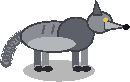
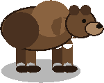

یورش و دفاع
یورش راه ثروتمند شدن در هورامان نیست. از پنل سال میتوانید به همسایه یورش ببرید: اول نگهبانانتان میروند، بعد یارانی که اجیر کردهاید. هر یورش از جایگاه شما در طایفه کم میکند و همسایهها در سالهای سخت آن را به یاد میآورند. غنیمت گردو، آب انار و میوه است.
حیوانات وحشی خودشان سراغ شما میآیند: گرگها و خرسها برای انبار و دام پایین میآیند، بیشتر در پاییز و زمستان. نگهبانان شما و سگهای سگدانی، همراه با برجها، تلهها و دیوارهایی که میسازید، از روستا دفاع میکنند.
ستارههای یورش
هر یورش ۳ دقیقه طول میکشد. سه هدف هر کدام یک ستاره میدهند: رسیدن به قله، گرفتن پرچم، و شکستن پایداری (ویران کردن ۶۰٪ روستا). سه ستاره ۳ کلاش هم میدهد. هر یورش ۱ از جایگاه شما در طایفه کم میکند.
حیوانات وحشی
| دام | جان | آسیب | سرعت | تعداد (بر پایهٔ سطح دیوانخانه) | |
|---|---|---|---|---|---|
 | گرگ | ۵۵ | ۶ | ۲٫۹ | ۲ / ۳ / ۴ / ۵ / ۶ |
 | خرس | ۴۰۰ | ۲۲ | ۱٫۷ | ۱ / ۱ / ۱ / ۱ / ۱ |
پیروزی بر حیوانات وحشی، بر پایهٔ سطح دیوانخانه، گردو میدهد (۱۵۰ / ۳۰۰ / ۶۰۰ / ۱٬۰۰۰ / ۱٬۶۰۰) و گاهی ۲ کلاش.